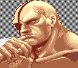

Sagat

Sagat is a video game character from the Street Fighter series,
first appearing as the non-playable main antagonist and final
boss in the original Street Fighter. He later returned as a

boss in Street Fighter II before becoming playable in its update,
Street Fighter II: Champion Edition. He is the "Emperor of Muay Thai"
and a former member of Shadaloo, where he acted as a personal bodyguard
for M. Bison. He later changed sides to redeem himself and became one
of the protagonists in the series.